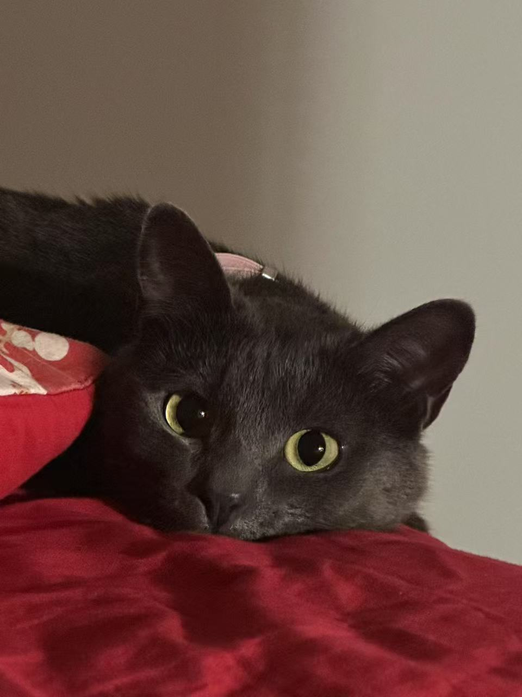

Anya Ming

Summary
Born in October 2022 and adopted in January 2023, Anya is an affectionate and playful feline. Known for her love of fish and her nightly tradition of sleeping with her mommy, Anya excels in both cozy companionship and active play. She enjoys a good game of fetch with her little mouse and brings joy through her unique ability to demand attention when it’s most needed.
Education
Kittenhood Studies at Pawbridge Academy — Class of 2023
- Graduated with honors in “Cuteness Overload” and “Efficient Lap Occupation”
Home-Based Training — Ongoing
- Specialization in human manipulation through head tilts and meows
- Advanced coursework in “Sneaking Onto Counters” and “Stealthy Snack Thefts”
Work Experience
Full-Time Family Companion
- Successfully transitioned from shelter life to becoming the household's Chief Joy Officer.
- Enhanced human productivity by offering regular cuddles and distraction breaks.
- Conducted nightly patrols to ensure the home remained rodent-free (real or imagined).
Chief Joy Officer
- Introduced new play initiatives, including "Chase the Invisible Enemy" and "Knock Things Off Tables."
-
Tested durability of furniture and household items through rigorous claw inspections.
Skills
-
Expressive Communication: ⭐️⭐️⭐️⭐️⭐️
-
Creative Problem Solving:⭐️⭐️⭐️⭐️
-
Unmatched Agility:⭐️⭐️⭐️⭐️⭐️
-
Emotional Support:⭐️⭐️⭐️⭐️⭐️
Other
Hobbies
Contact Me